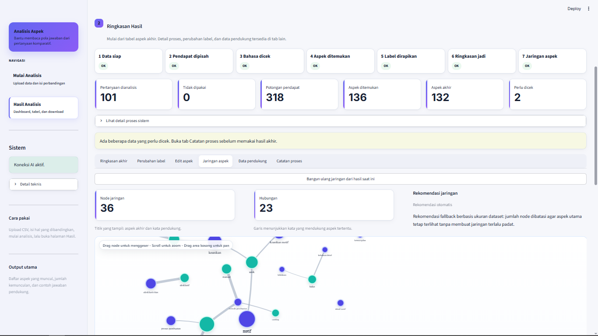

Validasi input
Mengecek struktur CSV, entity pembanding, serta bentuk pertanyaan sebelum pemrosesan berjalan.
Semua Proyek/Comparative Text Analysis
← Kembali ke semua proyekNLP · Streamlit · LLM
Aplikasi Streamlit untuk mengolah respons teks komparatif menjadi aspek, frekuensi, contoh pendapat, dan ringkasan hasil yang dapat ditinjau kembali.
Pipeline analisis

Respons terbuka berisi variasi istilah, cara membandingkan, dan tingkat detail yang berbeda. Pembacaan manual pada banyak respons menjadi berulang dan sulit ditelusuri. Sistem ini membantu peneliti memproses data secara bertahap: memvalidasi input, mengekstrak unit opini, menormalkan aspek, lalu menyajikan keluaran yang masih dapat diperiksa manusia.
Mengecek struktur CSV, entity pembanding, serta bentuk pertanyaan sebelum pemrosesan berjalan.
Memakai Stanza untuk tokenisasi, POS tagging, lemma, dan dukungan bukti linguistik.
Menggunakan OpenRouter untuk membantu penilaian komparatif dan normalisasi aspek, dengan keluaran yang tetap dapat diaudit.
Membaca dan memvalidasi data CSV fleksibel.
Memeriksa entitas dan bentuk pertanyaan komparatif.
Menghasilkan kandidat opinion units dan aspek.
Menggabungkan variasi istilah agar analisis lebih konsisten.
Menyajikan frekuensi, contoh, dan jaringan aspek komparatif.
Pengguna dapat melihat tahapan yang telah selesai dan menelusuri letak proses ketika hasil perlu diperiksa ulang.
Opinion units, aspek, label komparatif, dan contoh teks disajikan dalam bentuk yang lebih mudah difilter dan direview.
Frekuensi dan hubungan aspek divisualisasikan untuk membantu menemukan pola awal sebelum interpretasi penelitian.
Output antara disimpan sehingga pengguna dapat meninjau proses, tidak hanya menerima hasil akhir yang sulit dijelaskan.
Kualitas keluaran bergantung pada kualitas input dan respons model. Karena itu, LLM diposisikan sebagai asisten dan hasilnya tetap perlu diverifikasi peneliti.